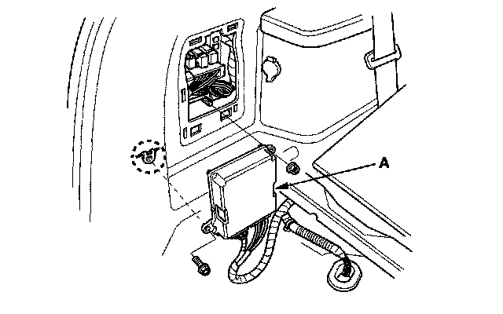
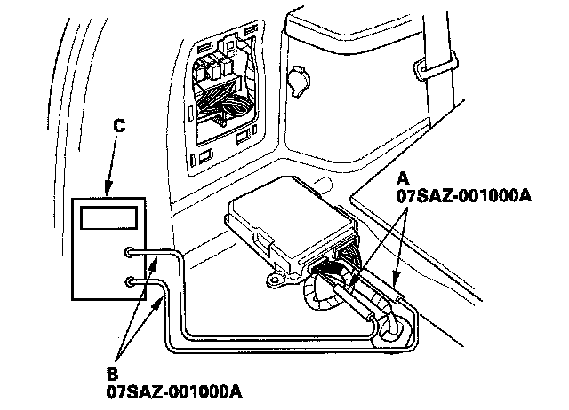

Component Tests and General Diagnostics
How to Troubleshoot Circuits at the SH-AWD Control UnitSpecial Tools Required
Backprobe set 07SAZ-001000A (two required)
1. Remove the left side trim panel cover.
2. Remove the cargo floor lid and the cargo box.
3. Remove the SH-AWD control unit (A).

4. Inspect the circuit on the SH-AWD control unit according to the DTC Troubleshooting using the special tools and a digital multimeter or an analog circuit tester.

5. Connect the backprobe adapters (A) to the stacking patch cords (B) and connect the cords to the multimeter or an analog circuit tester (C). Using the wire insulator as a guide for the contoured-tip of the backprobe adapter, gently slide the tip into the connector from the wire side until it comes in contact with the terminal end of the wires.